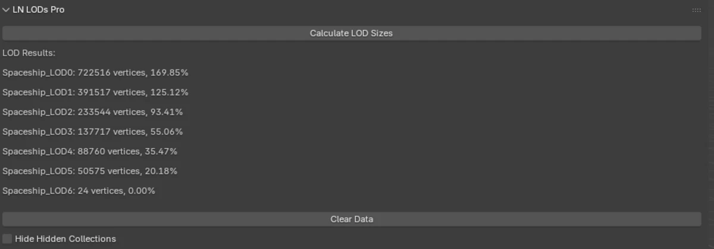
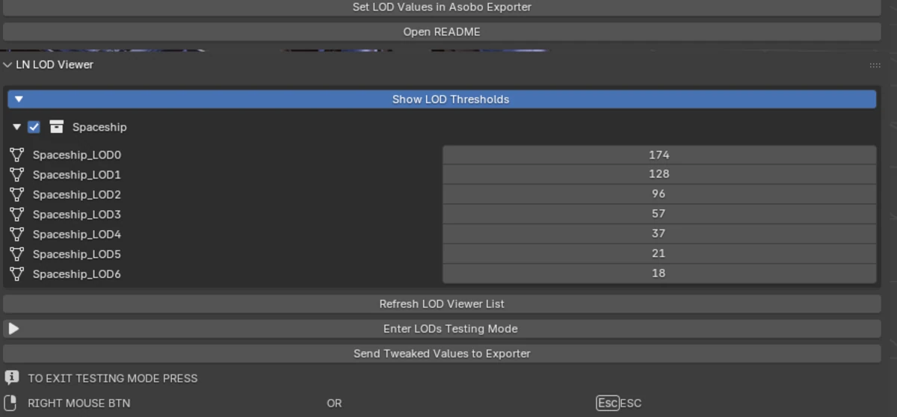

Contesto
In Microsoft Flight Simulator 2024 un modello viene esportato con più LOD; il simulatore sceglie quello in base alla copertura a schermo. Le soglie vivono nell'XML del modello e l'exporter le scrive dal proprio conteggio vertici. Quel conteggio non è il numero che mostra Blender: l'exporter separa seam, normali, colori e tangenti, e unisce gli oggetti prima di contare.
L'exporter dell'SDK è il riferimento. L'add-on non lo sostituisce: calcola lo stesso conteggio, scrive i valori nei LOD group e lascia la pipeline standard come unico percorso.

Il problema
Un modello poteva sembrare corretto in Blender e fare popping nel simulatore, perché la soglia era calcolata su un conteggio diverso. L'unico modo per scoprirlo era esportare, aprire il sim, volare alla distanza giusta e guardare. Poi tornare indietro, cambiare un numero e ripetere.
Volevo il ciclo dentro Blender: vedere il conteggio che vedrà l'exporter, vedere la copertura a una certa distanza e provare la transizione prima di scrivere i file.
- Crea i LOD
- Esporta
- Avvia il simulatore
- Abilita la modalità di test LOD
- Confronta i valori e annota le differenze
- Esci dal simulatore e correggi in Blender o nell'XML
- Crea i LOD
- Prova in Blender
- Esporta
Il percorso standard passa dal simulatore per scoprire se il conteggio è giusto. LN LODs Pro risponde dentro Blender.
Perché l'ho scritto
Lavoro come sviluppatore indipendente e partner nell'ecosistema MSFS; uso l'SDK e l'exporter ogni giorno. All'epoca non ho trovato uno strumento che contasse i vertici come l'exporter e permettesse di provare il risultato prima dell'export. Così l'ho scritto, e ho continuato a usarlo.
Non era uno script da weekend. La prima versione serviva a evitare un conteggio manuale; la linea Pro ha aggiunto il viewer, operatori non distruttivi e una storia di manutenzione. La decisione di spenderci mesi è nata perché il lavoro che toglieva era ripetitivo e misurabile.
Come è cambiato il metodo
Lo strumento è iniziato nel 2023 ed è cresciuto a fasi. Quello che è cambiato non è solo il codice: è il modo in cui lo scrivo.
- 2023
ChatGPT e Notepad++
Prima versione funzionante. Copia, incolla, esegui, correggi; niente version control e niente piano.
- 2023
VS Code e Git
Il progetto diventa un codebase: cronologia, diff, una struttura che sopravvive a una pausa.
- 2024
Agenti
Plan e audit file, contesto esplicito, revisione umana. L'agente accelera; la conoscenza del dominio resta mia.
- 2026
Suite e rework
L'add-on diventa il primo modulo di una suite di tool MSFS; il workspace agenti dietro è pubblico.
Il workspace è open source: sei agenti OpenCode, una cache di conoscenza verificata e un installer. Non è un prompt magico; è una disciplina fatta di piani, audit e controlli.
Gli scogli tecnici
- 01
Contare i vertici come l'exporter
Seam, normali split, colori, tangenti e oggetti uniti: il conteggio deve seguire le stesse regole dell'exporter di MSFS 2024, non il pannello statistiche di Blender.
- 02
Prestazioni su scene grandi
numpy vettorizzato dove serve, fallback BMesh dove non serve, cache per identità oggetto per non ricontare la stessa mesh.
- 03
Provare i LOD senza esportare
Bounding sphere, copertura come raggio diviso distanza, clamp nello stesso intervallo del simulatore. Il viewer mostra le soglie prima che parta l'exporter.
- 04
Cambio LOD istantaneo
I modifier vengono bakati all'ingresso in testing mode, così il cambio LOD è immediato e la scena resta confrontabile.
- 05
Operatori non distruttivi
Overlay, lente, visibilità e undo vengono salvati e ripristinati. Provare un LOD non deve lasciare il file cambiato.
- 06
Integrazione con l'exporter
I valori vengono scritti nei LOD group, con arrotondamento e margine, e il percorso di export standard resta l'unico.
Risultato
Centinaia di modelli, inclusi i tester durante la pre-release della 3.x. Il conteggio vertici è 1:1 con l'exporter perché l'add-on usa lo stesso motore di export e triangolazione, basato su Khronos glTF. Lo slider del margin è un fallback per gli aggiornamenti di Asobo, non una compensazione dell'errore.
Il tempo risparmiato dipende dal modello: da 15 minuti a 1 ora di debug LOD su un modello semplice; modelli complessi con sub-modelli o mesh multiple, ognuna con i propri LOD, possono arrivare a ore.
La 1.6 è stata la prima versione pubblica: gratuita, senza LOD debugger. La linea 3.x ha portato la prima iterazione Pro e il viewer con la testing mode. La linea 4.x ha standardizzato la divisione: Pro è la base gratuita più i moduli Pro; togli quei moduli e funziona ancora come versione free.
È venduto su Gumroad e Superhive, è GPL e include il sorgente nell'acquisto. La linea 4.x è in rework per la suite.


Limiti
L'add-on dipende dagli interni dell'exporter. Un cambio nell'SDK può cambiare il conteggio, e l'add-on deve seguirlo. Dipende anche dall'API di Blender: una nuova versione può rompere un operatore o un pannello.
Lo slider del margin non è una correzione di un errore intrinseco: è un buffer per la finestra tra un aggiornamento di Asobo e l'aggiornamento del pacchetto.
Restano edge case: geometria non-manifold, stack di modifier pesanti, instancing. Lo strumento minimizza il rischio; non lo elimina. La scelta di design è rendere il fallimento visibile prima dell'export, non promettere un conteggio perfetto su ogni scena.
Cosa ho imparato
La conoscenza del dominio è tua; l'agente la accelera. Un modello può proporre una soluzione, ma non può sapere perché l'exporter conta due volte un seam. Quella è la parte che porti tu.
La manutenzione è il costo vero. Il codice che non tocchi è quello che resta corretto; il resto è una sequenza di piccole decisioni che devono restare leggibili sei mesi dopo.
LN LODs Pro è distribuito con licenza GPL; il sorgente è incluso nell'acquisto. La pagina non carica risorse di terze parti: nessun cookie, nessuna analytics e nessuna richiesta a GitHub, Gumroad, Superhive o YouTube prima del click.